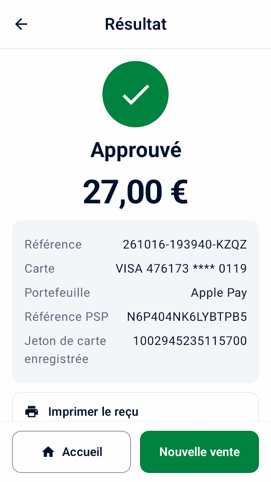

Guide
Essayer la démo
Essayez une vente, un reçu et un remboursement fictifs sans compte Adyen ni terminal.
Installez l'application
Utilisez un téléphone ou un émulateur Android 9 ou ultérieur.
- Sur l’appareil, ouvrez le lien
de téléchargement direct ou scannez ce code avec son appareil photo :

- Ouvrez l’APK sur l'appareil et autorisez l'installation à partir de votre navigateur ou de votre gestionnaire de fichiers lorsque Android vous le demande.
- Sur l’écran d’accueil, sélectionnez Essayez une démo, puis appuyez sur Continuer.
Faire une vente et un remboursement fictifs
- Sur l’accueil, appuyez sur Nouvelle vente et choisissez un produit fictif.
- Appuyez sur Débiter, vérifiez le total, puis sur Payer.
- Vérifiez le reçu.
- Ouvrez Historique, sélectionnez la vente, puis appuyez sur Rembourser. Choisissez un remboursement intégral et confirmez.


Explorer d’autres scénarios
- Dans Paramètres › Simulateur, choisissez le résultat du paiement, le délai et la présence d’une imprimante. Activez Approbations hors ligne pour voir les avertissements hors ligne dans l’historique et le rapprochement du terminal.
Dans Paramètres › Données et transfert, utilisez Ajouter des exemples de données ou Supprimer les exemples de données. Les exemples sont signalés comme des démos et comptent dans les totaux et rapports des jours de démo ; les ajouter remplace les informations commerciales du reçu par un café fictif et ajoute son logo s’il n’y en a pas. Les supprimer conserve vos propres produits, historique, paramètres et logo.
Les liens de paiement fonctionnent hors ligne sans identifiants API, et leurs écrans et reçus sont signalés comme des démos. Leurs QR codes ne peuvent pas encaisser de paiement ; touchez Simuler le paiement pour en terminer un.
Le simulateur montre le comportement de Mini mPOS, pas ce que votre terminal ou votre compte Adyen prend en charge. Des fonctions comme le guidage audio, les approbations hors ligne et les capacités d’Adyen sont imitées : testez-les sur un vrai terminal TEST avant de vous y fier.
La démo propose aussi les pourboires sur le terminal et Adyen Giving au paiement, avec leurs interrupteurs désactivés, ainsi qu’une carte cadeau SVS dans Cartes cadeaux. Son historique d’exemple montre un pourboire, un don, une approbation hors ligne et une carte enregistrée pour la référence client CUST-1042, que vous pouvez débiter depuis Jetons. Dans Paramètres › Simulateur, définissez un Supplément ou une Approbation partielle (%) inférieure à 100 pour essayer ces parcours ; à 100, les montants se terminant par 139 sont approuvés en partie, comme avec la carte de test Adyen. Lorsque vous configurez de vrais paiements, Mini mPOS propose de désactiver ces fonctions de la démo, sauf si vous les conservez.
Passer à la configuration réelle
Prêt à vous connecter ? Dans Paramètres › Simulateur, touchez Configurer des paiements réels, puis Continuer la configuration. Confirmer TEST ou LIVE supprime tout l’historique local ; les exemples de produits et les informations du reçu restent, donc supprimez les exemples et vérifiez les informations commerciales avant de vrais paiements. Commencez par TEST.